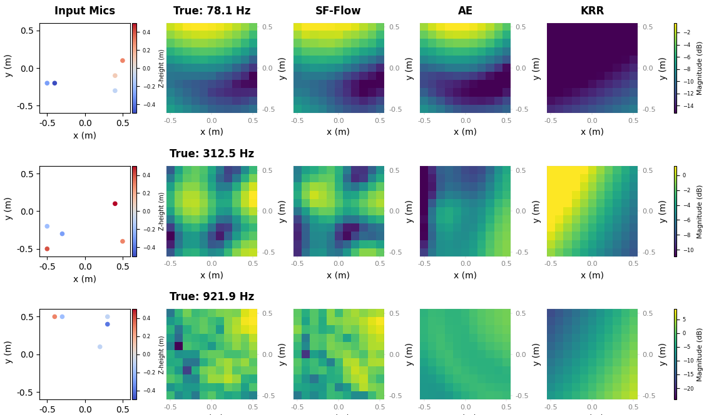

Reconstructing a 3D sound field from sparse microphone measurements is a fundamental yet ill-posed problem, which we address through Acoustic Transfer Function (ATF) magnitude estimation. ATF magnitude encapsulates key perceptual and acoustic properties of a physical space with applications in room characterization and correction. Although recent generative paradigms such as Flow Matching (FM) have achieved state-of-the-art performance in speech and music generation, their potential in spatial audio remains underexplored. We propose a novel framework for 3D ATF magnitude reconstruction as a guided generation task, with a 3D U-Net conditioned by a permutation-invariant set encoder. This architecture enables reconstruction from an arbitrary number of sparse inputs while leveraging the stable and efficient training properties of FM. Experimental results demonstrate that SF-Flow achieves accurate reconstruction up to 1kHz, trains substantially faster than the autoencoder baseline, and improves significantly with dataset size.
Reconstructed ATF magnitudes at three horizontal slices for three test sources, using M = 5 observations, for the least accurate SF-Flow model trained on the full frequency range (0–64 bins). At f = 78 Hz, both SF-Flow and AE accurately recover the large-scale field structure; SF-Flow additionally preserves finer spatial detail in the low-magnitude region. From f = 312 Hz, AE estimates become noticeably overly smooth, missing spatial variation that SF-Flow still partially retains. This tendency intensifies at f = 921 Hz, where SF-Flow retains realistic spatial variability despite its highest LSD error, in contrast to AE's near-uniform field estimation, while training roughly an order of magnitude faster (about 2.4 hrs vs. 24 h on the same device).

Estimated ATF magnitudes on horizontal slices of the target volume at 78.1, 312.5 and 921.9 Hz (one frequency per row), for randomly selected sources and sparse microphone configurations from the test set. The first column shows the sparse microphone positions, with colour indicating height; overlapping markers share the same (x, y) coordinates at different heights. The remaining columns show the ground-truth simulated field and the reconstructions by SF-Flow, AE and KRR. Colour bars are per row.
@inproceedings{erdem2026sfflow,
author = {Erdem, Ege and Koyama, Shoichi and Nakamura, Tomohiko and Das, Orchisama and Cvetkovi{\'c}, Zoran},
title = {{SF-Flow}: Sound field magnitude estimation via flow matching guided by sparse measurements},
booktitle = {2026 19th International Workshop on Acoustic Signal Enhancement (IWAENC)},
year = {2026},
note = {Accepted}
}